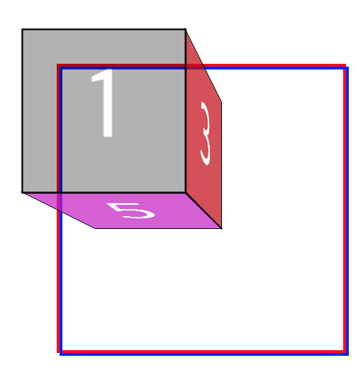

Cube version1
정육면체를 그려보자. 프로젝트명 Cube.
정육면체를 그리는데 이렇게 힘들 줄이야!
정육면체를 그려보려고 함
네모 6개를 변형하여 붙이면 된다고 생각함
transform 속성 중 도형을 변형하는 속성인 rotate, translate 외에 skew 가 있다
skew는 비스듬한 뜻으로 skew(Θ)로 Θ만큼 도형을 비틀어 준다
아무리 비틀어 봐도 원하는 모양으로 변형하는게 어려움
MDN에서 3D효과를 준 정육면체 그리는 법을 찾음
Using CSS transforms
읽어봐도 잘 모르겠음 다시 찾으러 감
자세하게 설명해주는 블로그를 찾음
CSS3 3D effect(perspective) #1
3D효과를 위한 중요 설정은 투영점(perspective)이며 값에 따라 원근감을 주는 초점이 조절된다
투영점이 있을 경우 회전과 이동을 실행할 경우 코드에 선언한 순서대로 실행된다
MDN의 예제로 그린 정육면체 그림
다음 그림에서 1번 front와 6번 back의 css 효과를 비교해 보자
1 | .front |
front(1)은 앞으로 back(6)은 뒤로 서로 정반대로 이동하고 있지만 이동값이 translateZ(50px)로 동일하다
코드에 선언한 순서대로 실행되기 때문에 back은 rotateY(180deg)로 바라보는 방향을 바꿔 이동을 했기 때문이다
6이 180도 반대로 쓰여있는 것을 보면 방향이 바뀌었음을 알 수 있다.
방향이 바뀌면서 도형의 뒷면이 보여지고 있는데 backface-visibility로 vibile/hidden을 설정 할 수 있다
hidden으로 설정할 경우 뒷면이 보여지고 있는 2,4,6이 보이지 않게 된다.
backface-visibility:hidden 그림